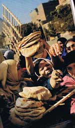

Humanitarian gallery
What are making headlines around the humanitarian world? What do underreported issues mean? How do you know when a crisis is really a crisis?
Latest news & pictures
Check out the latest humanitarian news and view images of humanitarian situations that have impacted our world.
Underreported issues
What do underreported issues mean?
There are many humanitarian stories that do not attract media attention. Chronic or long-term issues tend to lose in the fight for space in print media as new headlining stories come in.
Plus, there are not enough journalists devoted to covering humanitarian situations especially involving aid relief efforts.
 Useful resources
How do you know when a crisis is really a crisis? How can you sense that an emergency is already unravelling?
These are just a few questions that even professional journalists need help with.
And here’s where humanitarian aid agencies are particularly a useful resource. Get to know some of them.
Back to top